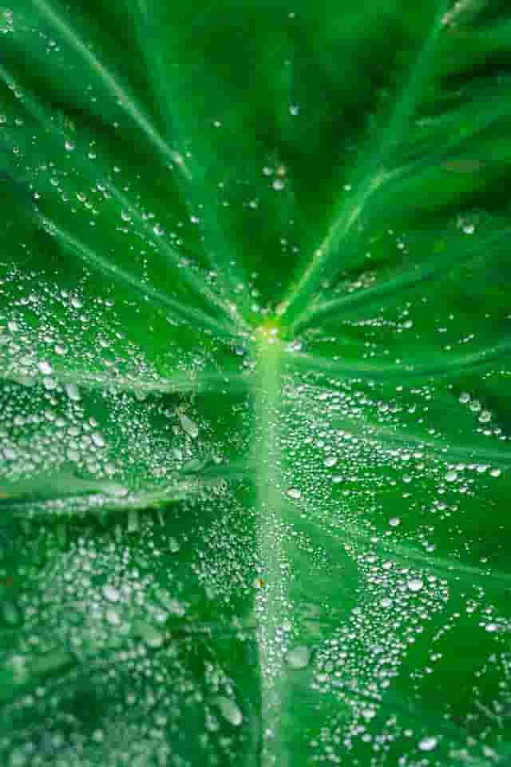

The Story of Hāloa
The sacred relationship between Native Hawaiians and kalo begins with the moʻolelo (story) of Hāloa. In the tradition, Wākea (Sky Father) and Hoʻohōkūkalani (creator of stars) had a child named Hāloa who was stillborn. They buried him and from that spot grew the first kalo plant. This makes kalo the elder sibling of the Hawaiian people—more than just food, but family. This connection shapes the kuleana (responsibility) Hawaiians have to care for the land, because when you care for your elder, your elder cares for you.
Kalo in Ancient Hawaiʻi
For over a thousand years, kalo was the foundation of Hawaiian society. Ancient Hawaiian voyagers brought it in their canoes across the Pacific and developed hundreds of varieties suited to different needs. Entire valleys were transformed into loʻi with sophisticated ʻauwai (irrigation) systems that distributed water from mountain to sea. Families cared for the ʻāina (land) and passed down knowledge through generations. At its peak, Hawaiʻi's kalo system supported a thriving population of thousands and stood as one of the most advanced agricultural systems in the Pacific.
Why This History Matters Today
Western contact brought disease, land privatization, and other undesirable effects that led to the decline and abandonment of loʻi. The 1970s Hawaiian Renaissance ignited a widespread revival of traditional practices, encouraging a new generation of Hawaiians to reclaim their heritage. The hope is that understanding the story of Hāloa changes how you see kalo. It's not just a plant—it's a relationship between land and people. When you get your hands in the mud, you're continuing the traditions that have connected Hawaiians to their ancestors for centuries.